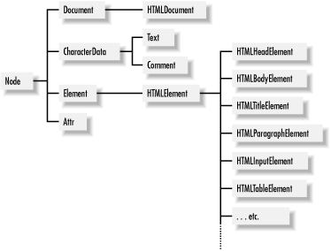

DOM Scripting - Quick Review
Scripting Browser Windows
Scripting Browser Windows: Timers
setTimeout(fun, deltaT): fun is executed after the deltaT miliseconds
setInterval(fun, deltaT): fun is executed every deltaT miliseconds
clearTimeOut(fun), clearInterval(fun): cancel the execution of a scheduled function
Remark: these functions take string arguments or functions as arguments. If you pass them a string argument it is dynamically evaluated
Scripting Browser Windows: Current Location
How to interact with the current location?
location: the location property
href: the href property
Remarks:
Difference: if there was a redirect location holds the original reference
Both can be set programmatically
How to interact with the current history?
back():moves BACK in the window or frame history
forward():moves FORWARD...
Navigator Information
What can we know about the current navigator?
appName: the name of the web browser
appVersion: the version of the web browser
appName: the string that the browser sends in its USER-AGENT
appName: the name of the web browser
appName: the hardware platform on which the browser is running
Why is this information useful?
- Privacy...
- Graceful degradation...
Manipulating Windows
Types of coordinates
- Screen Coordinates: relative to the screen
- Window Coordinates: relative to the viewport
- Document Coordinates: relative to the document
Size and position:
DOM - Revisiting the fundamentals
DOM
DOM stands for Document Object Model - it is an API
DOM API
The Node API
Different types of nodes: nodeType
Node.ELEMENT NODE
Node.TEXT NODE
Node.DOCUMENT NODE
Node.ATTRIBUTE NODE
Traversing the document:
childNodes
firstChild
lastChild
nextSibling
previousSibling
parentNode
The Node API
Modifying a node:
appendChild()
removeChild()
replaceChild()
insertBefore()
Attributes:
attributes
getAttribute()
getAttributeNode()
removeAttribute()
setAttribute()
The Document Fragment
DocumentFragment node that does not appear in a document itself but serves as a temporary for a sequential collections of nodes and allows those nodes to be manipulated as a single object
Adding a DocumentFragment to an element is the same thing as adding its children
The Node API
Finding elements
getElementById()
getElementByName()
getElementByTagName()
getElementByClassName()
Remark:These methods output HTML collections. HTML collections seem like normal arrays, but they are NOT.
LIVE Collection: HTML collections are QUERIES against the document. The query corresponding to the collection is reexecuted each time you need to update the collection
Document API
Creating nodes:
createElement()
createTextNode()
More document properties:
document.images
document.links
document.forms
document.frames
CSS in one slide
CSS - cascading style sheets
A style sheet is a list of style rules.
styleRule ::= selector { declaration-list }
declaration-list ::= declaration; declaration-list
declaration ::= property: value
Example
p { color: green; }
img {
float: left;
margin-right: 10px;
}
Scripting CSS styles
You can interact the style attribute directly.
Alternative ways:
style property of HTML elements: it only gets the inline style
To obtain the real style: currentStyle and getComputedStyle()
Scripting CSS styles - the right way
Some advice:
Do NOT script styles directly
Use the HTML class attribute instead
Each HTMLElement object has a className property that mirror the HTML class attribut
Events and Event Handling
Events Models
The Original Event Model - DOM Level 0 API
An event is an abstraction internal to the web browser.
JavaScript cannot manipulate an event directly
To listen to an event you have to specify the corresponding event handler
The Standard Event Model - DOM Level 3 API
Events are objects that implement the interface defined in the DOM Level 3 API
Events are propagated in two phases: capturing phase and bubbling
Event Interface
The original event model
Event handlers:
| onabort, onblur, onchange, onclick, onerror |
| onfocus, onkeydown, onkeypressed, onkeyup, onload |
| onmousedown, onmousemove, onmouseout, onmouseover |
| ... |
Remark: Use onload to avoid interacting with the dom before it is loaded!
When an event is triggered, the browsers executes the corresponding event handler (if it is defined) of the element on which it occured.
The Standard Event Model
Event Capture
Capturing Phase: the event propagates from the document object to the target node
Target Phase: event handlers registered directly at the target are run
Bubbling Phase: the event bubbles back up to the document node
The Standard Event Model - Registering Event Listeners
To register an event listener: addEventListener(eventType, fun, bool)
bool == true: capturing phase
bool == false: bubbling phase
And what about the target phase?
To remove an event listener: removeEventListener(eventType,fun,bool)
The Standard Event Model - The Event Object
Three types of events
Event: abort, blur, change, error, focus, load, reset, resize, scroll, select
MouseEvent: click, mousedown, mousemove, mouseout, mouseover, mouseup
UIEvent: OMActivate, DOMFocusIn, DOMFocusOut
The Event interface
type
target: the node on which the event occured
currentTarget: the node on which the event is being processed
eventPhase: a number specifying the event phase
timeStamp: a date object specifying when the event occurred
bubbles: a boolean specifying whether the event bubbles up
cancelable:a boolean specifying whether the event has a default action
stopPropagation()
preventDefault()
/
#